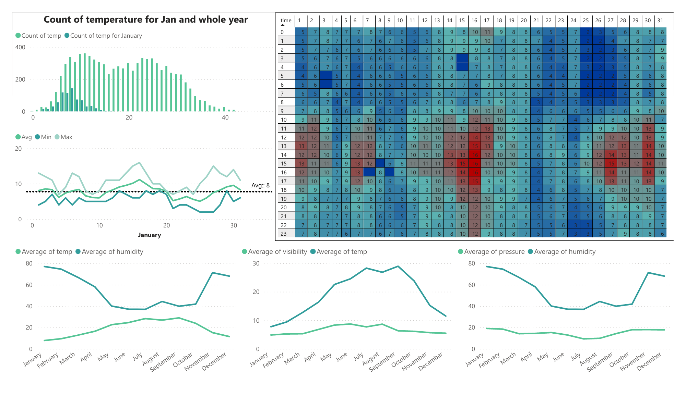
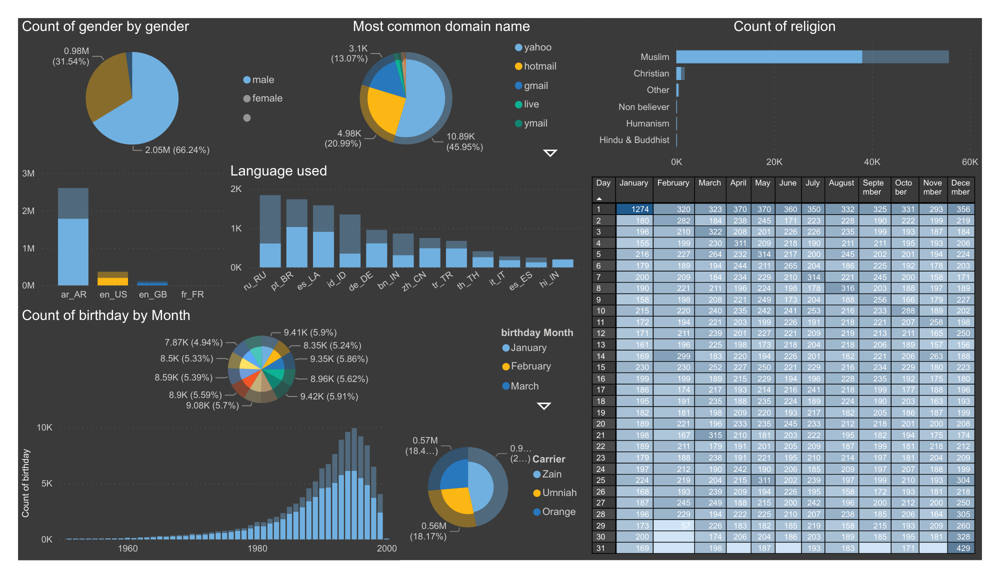

Historical Weather Data Analysis
As an avid gardener I had to know the best time of year for agricultural activites, for example when grafting citrus trees, the best temperature at which citrus wounds heal is between (21°C and 29°C) according to fruitmentor.com
knowing what the temperature and weather is like where I live gives me an idea in what I can or can't plant, graft, grow. I cant grow mangoes where i live because mangoes are freeze sensitive and require humid and warm weather all year round
The following are the steps I took to make this project from aquiring the data to visualizing
- Web Scraping: scraping the historical hourly data from a website using
Selenium
- Data cleansing: cleaning, modifying using regular expression, and
converting the data into a CSV file for better handling
- Data Visualization: more cleaning and analysis of the data to get the
useful data for visualization and reporting using pandas and Matplotlib
- Power BI Dashboard: telling the story through visuals
Weather Analysis Jupyter Notebook
Hover or Click to Enlarge and Scroll Through the Notebook

Power BI Desktop View
Leaked Facebook Data Analysis
On April 2021 the data of more than half a billion Facebook user from 106 countries have been leaked, around three million belong to Jordanians, the data was puublished on a hacking forum and Facebook said the data was old, from a previously reported leak in 2019. It has denied any wrongdoing, saying that the data was scraped from publicly available information on the site!
Although the sample is huge it doesn't reflect the real world in some aspects, males are two times the females and there's apattern for birthdays growing almost exponentially with birthdays that ocuured in 1995 being at the top, maybe there was a pattern in how the data was leaked.
Mohamed is the most common name, which is highly likely considering Mohamed is one of the most common names worldwide, most used carrier is Zain at 46.6%, what i find hard to believe is that Yahoo is the top email domain name.
This repo was made to analyze the data, the data was in a good clean shape mostly, just required some touches and modification.
the exploratory analysis will not show sensitive data like the emails or phone numbers, just a simple analysis like phone carrier,email domain,religion and gender.
Facebook data analysis Notebook

Power Bi Dashboard
Python
this repository contains solutions to problems “katas” from Codewars website, the solutions are written in
Python. relied on libraries and researching to come up with solutions.
Used mathematical theorems, generators, list comprehension, dictionaries, and one-
liners “Pythonic way”
import re def is_pangram(s): return len(set(re.findall("[a-z]",s.lower())))==26
the code above checks if the given sentence is pangram or not -meaning does the sentence contain all the letters in a language- ; first the letters are converted to all lower case, then only the letters are taken from this sentence into a list, we can get unique values by using set, finally if the unique values count is 26 then it is a pangram.
def is_triangle(a, b, c): tl=(sorted([a,b,c])) if not(any(tl)>1): if tl[0]+tl[1]>tl[2]: return True else: return False else: return False
This code is a solution for the triangle inequality theorem which describes the relationship between the three sides of a triangle. According to this theorem, for any triangle, the sum of lengths of two sides is always greater than the third side
Web Scraping and Automation
scraping different content,data and elements from the web quickly and efficiently, cleaning and organizing the data in different ways and formats.
Autoamtion, controlling the computer, mouse, keyboard, making a macro-like procedures with minimal human intervention.
The gif below is an axample of web scraping it is the execution of this code, where the program collects all the data for a whole year.